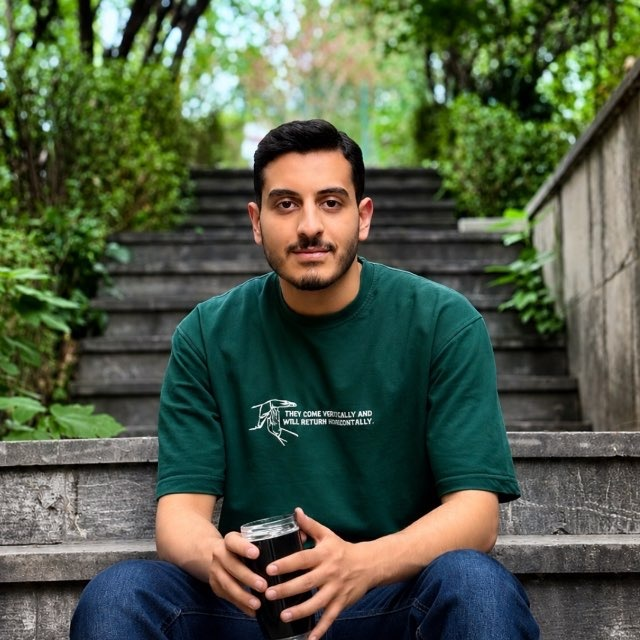

Ali Jamdar
Economics Student & Researcher
I am a graduate of Theoretical Economics from the University of Tehran, and I am currently pursuing a master's degree in Energy Economics at Allameh Tabataba'i University. My research interests include industrial policy, energy economics, macroeconomics, monetary economics and development.
Between 2024 and 2026 I worked part time at the Institute for Economic Development and Research, where I organised conferences and seminars and taught training courses in Python and Excel. I also work as a teaching assistant in macroeconomics, and in summer 2026 I was an equity research intern at Karafarin Asset Management.
I am always glad to connect with fellow researchers and students, so feel free to get in touch.

Contact
- LocationTehran, Iran
- Emailjamdara24@gmail.com
- LinkedInlinkedin.com/in/ali-jamdar
- CVDownload (PDF)
Research Interests
- Industrial Policy
- Monetary Economics
- Energy Economics
- Development Economics
- Macroeconomics
News
- Sep 2026Started the M.Sc. in Energy Economics at Allameh Tabataba'i University.
- Jul 2026Completed the B.Sc. in Economics at the University of Tehran.
- Jun 2026Joined Karafarin Asset Management as an equity research intern.
- Oct 2025Became Vice Secretary of the Scientific Association, Faculty of Economics, University of Tehran.
- Sep 2024Became a teaching assistant in Macroeconomics.
- Jan 2024Joined the Institute for Economic Development and Research as an executive and research assistant.